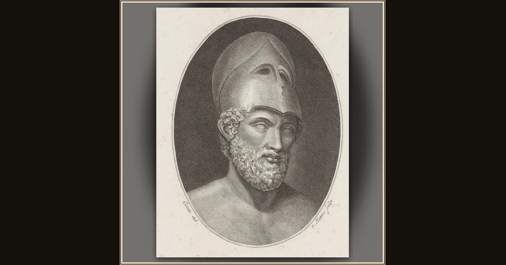

Portret van Perikles
Willem van Senus, after drawing by Condi · 1783 - 1851 · rijksmuseum
A helmeted, bearded portrait of Pericles; Aristotle names him as an example of practical wisdom, the capacity to discern what is good for oneself and for people generally (6.5). Explore its place in Aristotle's Nicomachean Ethics, Book VI, section 5.